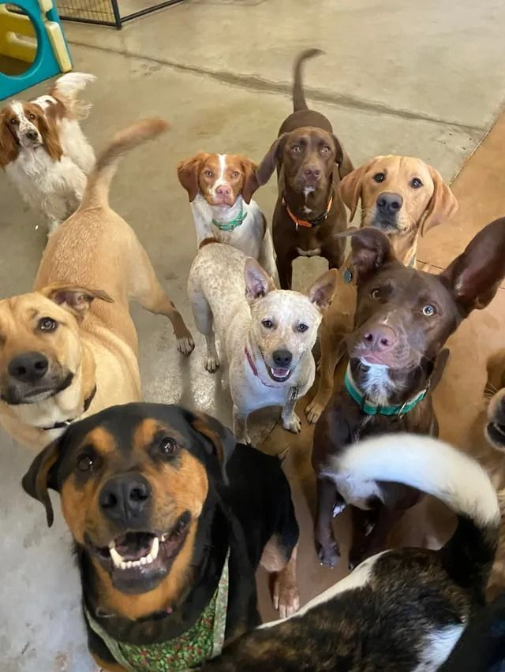
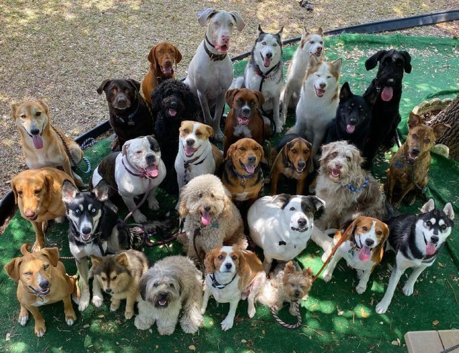

A Missão Patas é uma pesquisa em desenvolvimento sobre maus-tratos e abandono de animais em situação de rua, buscando compreender causas, impactos e formas de prevenção.
Conheça a pesquisa
Conheça a missão, os objetivos e a importância desta pesquisa.

Este projeto foi desenvolvido por alunos do SENAC Largo Treze com o objetivo de conscientizar a sociedade sobre a realidade dos animais em situação de rua.
A pesquisa busca analisar as causas do abandono, os impactos dos maus-tratos e possíveis formas de prevenção, incentivando a guarda responsável e o respeito aos animais.
Participar da pesquisaA pesquisa está em desenvolvimento e busca compreender a relação da sociedade com os animais em situação de rua.
Identificar os principais fatores relacionados ao abandono e aos maus-tratos, promovendo conscientização e responsabilidade.
Pessoas da comunidade interessadas em compartilhar experiências e opiniões sobre proteção animal .
Aplicação de questionários e análise das respostas coletadas para compreender a realidade encontrada em diversas regioes, entender quais são as causas que levam as pessoas a abandonarem seus animais ou ignorarem os animais em vulnerabilidade.
Resultados iniciais coletados durante o desenvolvimento do projeto.
A violência contra animais pode acontecer de diferentes formas.
O abandono acontece quando o tutor deixa o animal sem cuidados ou assistência. Nessas condições, o animal fica exposto à fome, sede, doenças, acidentes e outras situações de risco, comprometendo sua sobrevivência e qualidade de vida.
A agressão é qualquer ato de violência física ou psicológica contra um animal, como espancamentos, queimaduras ou envenenamentos. Essas ações causam sofrimento e colocam em risco a saúde e a vida do animal.
Sua resposta ajuda a compreender melhor a realidade dos animais em situação de rua, e nos indica como devemos ajudar para combater os maus tratos e o descaso com o tema.
Em todo o nosso pais, possuimos ONGs que nos ajudam a socorrer e a abrigar esses animais, de uma forma que eles sejam bem cuidados ate serem adotados ou algo do genero, eles podem fornecer alem de abrigo e alimentação, cuidados veterinarios, medicações acompanhadas por especialistas e muito mais!
Conheça algumas das ONGs que ajudam na nossa missão!
A Ecopatas arrecada tampas plásticas (de água, refrigerante, iogurte, leite, suco, isotônico, produtos de limpeza, creme dental, achocolatado, entre outras) e lacres de alumínio, e vendido este material para reciclagem e 100% da verba obtida é revertida para castração de animais abandonados ou em situação de vulnerabilidade em comunidades carentes. A Ecopatas não resgata e nem abriga animais. O foco é a esterilização de cães e gatos (e até coelhos) para, aos poucos, diminuir o número de abandonos e a proliferação destes animais nas ruas.
é uma organização sem fins lucrativos que visa resgatar cães das ruas e integrá-los a famílias que ofereçam amor e cuidados. Desde 2005, a ONG cuida de mais de 500 cães em abrigos próprios e promove campanhas de adoção, cuidados e conscientização.